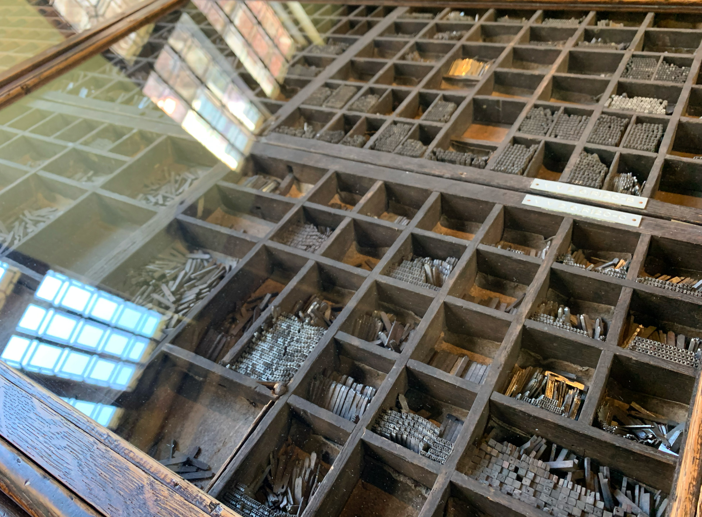
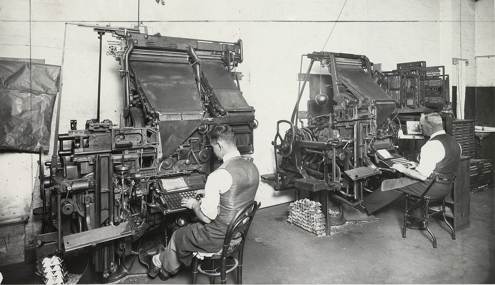
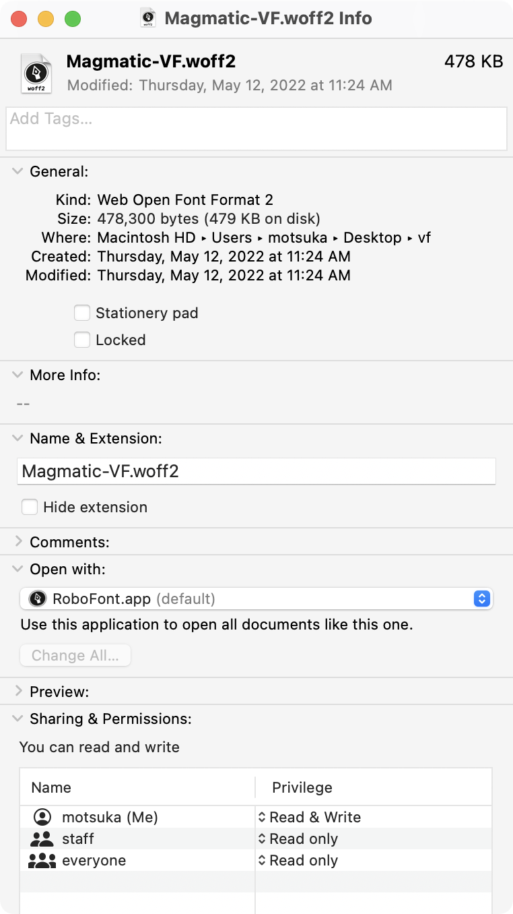

Type and Tools
The relationship of letters and technology
The Pen
Cuneiform c.3000 BCE—300CESource
Blunt end of a reed stylus into wet clay tablets Source
c.1600 BCE: Hieratic script on Papyrus Source
Qalam: pen made of cut, dried reed for ArabicSource
c.1200 BCE: Ancient Chinese Script on Oracle Bones Source
c. 221 BCE: Seal script style Source
c. 185 Han Dynasty Clerical Script Source
Types of Chinese calligraphic scripts Source
Comparison of ancient writing systems Source
Three different styles of the Burmese script Source
South Indian Palm trees Source
Broad flat brushes defined the letters before they were carved, giving rise to “serifs” Source
Broad flat brushes defined the letters before they were carved, giving rise to “serifs” Source
Gen Ramirez’s diagram of brush strokes for Roman Capitals Source
Evolution of various Roman / Greek uncials Source
1568: Parchment and paper maker. Source
Movable Type
1041: Bi Sheng in China invents “movable type” from a clay-like material similar to porcelain Source
1377: Korean Buddhist document Jikji , oldest metal type specimenSource
1436: Gutenberg develops the printing press Source
The Gutenberg Bible is an example of the earliest mass-produced publication set with movable typeSource
Type Shop in Plantin Moretus Museum, Antwerp.

A type drawer, with compartments for each letter by size
c. 1876: Punch (left) and matrix (right) used in type-founding. Source
VIDEO
The production of metal type Source
Press demonstration at Plantin Moretus Museum, Antwerp.
American Type Foundry Caslon Specimen, 1923 Source
Aldus Manutius (c. 1452-1515) and italic forms Source
1874: Different weights are developed to provide emphasis Source
1918: Morris Fuller Benton develops a variety of weights and styles for Cheltenham. It was among the first typefaces to be released as a type ‘family.’Source
1899 specimen from Hamlton Wood Type Source
Wooden type allowed much larger sizes to be printed Source
With the impact of Wood type, posters proliferated for entertainment, advertising, political campaignsSource

Linotype Machines enabled printing many copies more efficiently, enabling a more rapid pace of journalism Source
‘Farewell, Etaoin Shrdlu’ was a documentary on the end of “hot type.”Source
1873: Sholes and Glidden typewriter with QWERTY keyboard Source
IBM Selectric Type Samples Source
Digital Type
Morisawa Phototypesetting Machine from 1960s Source
Photo-typesetting mechanismSource
Frutiger’s Univers aimed to take advantage of Phototypsetting technology. Source
1965: Rudolf Hell invents Digiset, the first digital typesetter Source
Gerard Unger’s Demos, decomposed of several hundred bitmaps, to be used for typesetting on the Hell Digiset Source
A 8 x 8 bitmap composed of 0s and 1sSource
2003: Kare’s Chicago font on third-generation iPod Source
Netscape Navigator Browser, 1995 for Windows XPSource
A sample of core “Websafe” fonts
1974: Outline fonts are drawings constructed by mathematical formula, allowing any character outline to be scalable to any size. Source
Apple TrueType splines, late 1980s Source
All types of Bezier CurvesSource
1991: Adobe Multiple Master, a predecessor to Open Type Variable Fonts Source
1997: Microsoft / Adobe Open Font Format extends font’s typographic and language support capabilities.Source
OpenType 1.8
Variable Fonts
A variable font is a single font file contains many different variations of a typeface, instead of having a separate font file for every width, weight, or style. This format was developed in collaboration by Adobe, Apple, Google, and Microsoft.
The full family of Magmatic requires 30 files
Which would require 30 HTTP requests, and a data load of 2.1MB to be downloaded

As a variable font, it is a single file request of 478KB (88% lighter)
Digital letterforms are made of mathematical
Master Compatibility view of outlines
H
H
Design space visualizer (Occupant Fonts)
Instance positions within the design space
Laurence Penney’s Samsa, Variable Font Inspector
Axis Tag
Description
Valid Range
wght
weight
1—1000
wdth
width
>0, percent of normal width
opsz
optical sizing
>0, point sizes
ital italicization 0—1
slnt slant -90—90
Standard Axes for Open Type 1.8
Axes of Variation: to be continued


{kind=link}

{kind=link}

{kind=link}

{kind=link}


{kind=link}


{kind=link}


{kind=link}

{kind=link}

{kind=link}


{kind=link}


{kind=link}


{kind=link}


{kind=link}

#/media/File:Fann_Street_Foundry_Clarendon_image_with_text_for_emphasis.jpg){kind=link}


{kind=link}


#/media/File:Ipod_backlight_transparent.png){kind=link}


{kind=link}